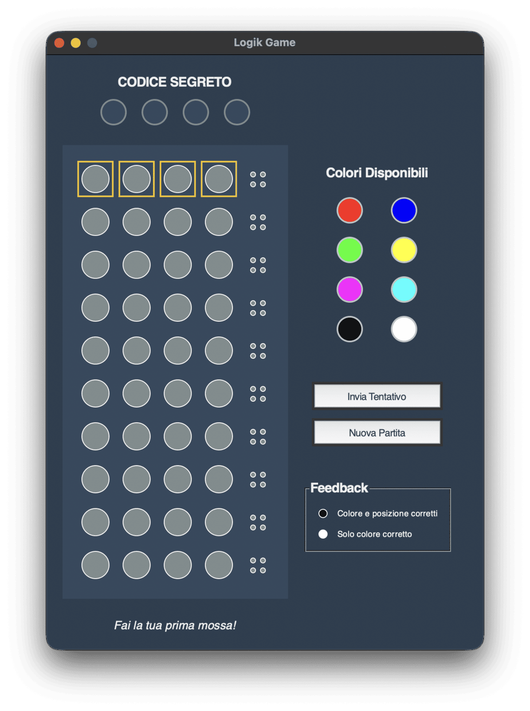

Logik
Desktop version of the famous boardgame Mastermind created by Mordecai Meirowitz in 1970.
Python
TKinter
Desktop version of the famous boardgame Mastermind created by Mordecai Meirowitz in 1970.
Logik is a desktop implementation of Mastermind, the code-breaking board game designed by Mordecai Meirowitz in 1970. The program plays codemaker: it draws a secret sequence of four pegs from a palette of eight colours, repeats allowed, and the player has ten attempts to break it.
Pegs are set by clicking them: each click advances the slot to the next colour of the palette and wraps around, so a guess is built directly on the board with no separate colour picker.
Submitting a row scores it the classic way: a black peg for each peg that is right in colour and position, a white peg for each colour that is present but misplaced.
Every guess stays on the board with its feedback, giving the same deduction table as the physical game, and a coloured border highlights the row in play. A side panel keeps the colour legend and the meaning of black and white pegs always in view.
When the game ends, win or lose, the hidden code is revealed and a message reports the attempts used.

Logik is a single Python script with a Tkinter interface. The board is drawn from canvas shapes rather than images, so pegs are recoloured in place and the app has no dependencies. Difficulty can be changed by adjusting the number of colours, the code length or the number of attempts.
A single ~230-line script: secret-code generation with random.choices, the peg-cycling input model, the two-pass feedback algorithm and the end-of-game logic, all inside one MastermindGUI class.
Builds the entire desktop window by subclassing tk.Tk — the ten-row board, the side control panel, the buttons and the status line — with no third-party UI dependency.
Draws every peg as an oval and rebinds click events per slot, which is how pegs are recoloured in place and how the feedback markers are rendered at a smaller size beside each row.
Provides the modal warning shown when the player tries to submit an incomplete row.